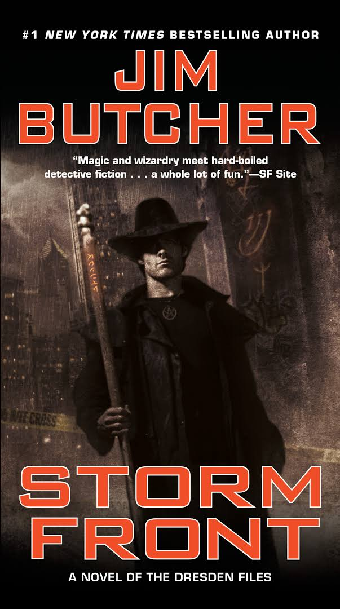
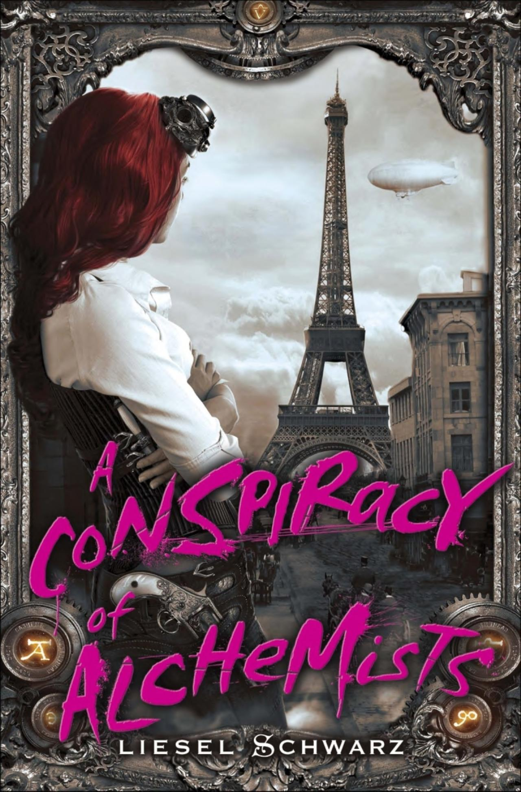
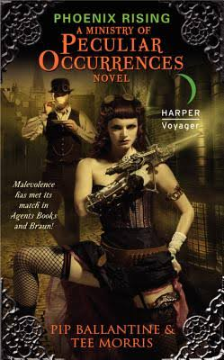

Throughout the years, I have a number of book sets that I really, really like. Some I have read just a few times. Others, I read or listened to over and over throughout the years. Nowadays, there are several that I listen to on audio book because I am on the road so much that it makes sense to be able to still enjoy these sets and still have time when I get home for other things.
Favorite Book Sets
The Dresden Files
A wizard of the white council and a detective with a good conscience to boot...
Enter HereThe Chronicles of Light and Shadow
A wizard of the white council and a detective to boot...
The Ministry of Peculiar Occurrences
A wizard of the white council and a detective to boot...
The Ancient Blades Trilogy

A wizard of the white council and a detective to boot...